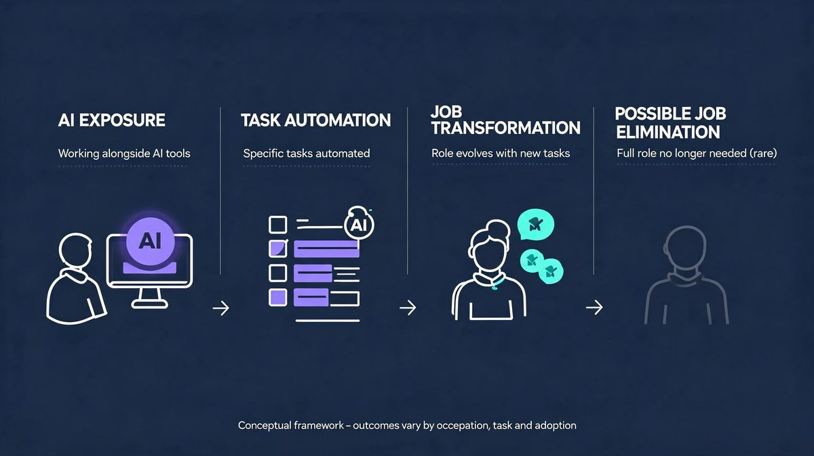
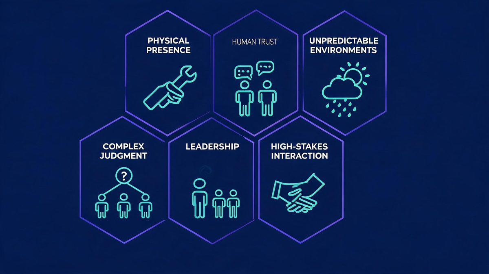

About one in four workers worldwide already holds a job exposed to generative AI — that's the International Labour Organization's estimate. And almost none of them will lose the entire job to it.
Here's the direct answer: no career can honestly be called AI-proof. But some are structurally harder to fully automate — because they depend on physical presence, unpredictable environments, human trust, complex judgment, or accountability that someone must legally own. The useful question isn't "which jobs will AI never touch?" It's "which jobs contain tasks that stay hard to automate?"
This analysis evaluates eight career families at the task level, using the ILO's 2025 occupational exposure research, the World Economic Forum's Future of Jobs survey, and U.S. Bureau of Labor Statistics projections. Every career here includes both sides: why full automation is difficult, and what AI can still change.
TL;DR
- AI exposure ≠ job replacement. The ILO's refined 2025 index finds the highest generative-AI exposure in clerical and highly digital work — not hands-on occupations.
- The most resistant careers blend physical execution, human trust and accountability: advanced practice nursing, skilled trades, rehabilitation, emergency response, leadership.
- AI is already inside these jobs — documentation, diagnostics support, scheduling, reporting. Resistance at the occupation level does not mean task immunity.
- The World Economic Forum projects 170 million new jobs created versus 92 million displaced by 2030 — a net gain, but massive churn underneath.
- Adaptability beats guarantees. Employers expect 39% of core skills to change by 2030 (WEF survey).
Are Any Jobs Truly Safe From AI?
No — and treating "AI-proof" as a real category leads to bad career decisions. What the research actually shows is more useful.
Occupations are bundles of tasks. The ILO's refined global index, published in May 2025, scores occupations across four exposure gradients and finds that generative AI transforms how work is done long before it eliminates the work itself. Exposure concentrates in clerical and highly digitalised occupations — data-entry roles, administrative support, routine information processing — while tasks requiring physical presence show far lower exposure.
- AI exposure — part of the job's tasks overlap with what AI systems can do.
- Task automation — specific tasks get handed to AI: drafting, summarising, data entry.
- Job transformation — the occupation survives, but its daily mix of tasks changes.
- Job elimination — the occupation itself shrinks or disappears. This is rare, slow, and driven by economics as much as capability.

Exposure does not automatically mean disappearance. A radiologist's AI reads scans faster than any human, yet the radiologist still owns the diagnosis, the patient conversation and the liability. That gap — between what AI can do and who remains accountable — is where most resistant careers live.
What Makes a Job Harder to Fully Automate?
Six characteristics recur across the resistant occupations. None of them makes a job immune; each one raises the difficulty of full automation.
Physical presence and hands-on work
Robotics lags software by years. Installing wiring in an old building, repositioning a patient, repairing a rooftop unit — these require dexterity and adaptation in environments that were never designed for machines.
Human trust and relationships
People accept care, money advice and life decisions from other people. A counselor's effectiveness runs through the relationship itself, not just the information exchanged.
Complex judgment and accountability
When a decision carries legal, medical or financial consequences, someone must own it. AI can recommend; it cannot be responsible. That constraint shapes hiring more than raw capability does.
Unpredictable real-world environments
Software runs in controlled conditions. Field work does not — every site, every system, every day differs. AI handles the routine; the exceptions are the job.
Leadership, negotiation and social influence
Coordinating people, resolving conflicts, motivating teams — the WEF's Future of Jobs 2025 survey ranks leadership and social influence among the skills growing in importance through 2030.
High-stakes human interaction
Emergency response, end-of-life care, crisis intervention. These moments demand human presence for reasons that are partly clinical and partly profoundly social.

Careers That May Be More Resistant to Full AI Automation
These are not guaranteed AI-proof careers. They are occupations whose current task mix makes full automation difficult today. Each profile includes where AI already helps — because it already does.
1. Nurse practitioners
Nurse practitioners examine patients, order and interpret diagnostics, prescribe medication and manage treatment plans — work that blends clinical judgment with physical examination and sustained patient relationships.
AI already drafts clinical notes, flags drug interactions and supports imaging reads. What it cannot do is the physical exam, the difficult conversation, or the accountability for a treatment decision. The BLS projects nurse practitioner employment to grow 40.3% from 2024 to 2034 — among the fastest of any occupation — driven by an aging population and primary-care shortages, not by AI hype.
What could change: ambient documentation and diagnostic support will keep expanding, and telehealth workflows will absorb more AI triage. Bottom line: among the most resistant careers in the analysis — and among the fastest-growing.

2. Registered nurses and clinical support
Direct nursing care — mobility, wound care, monitoring, patient advocacy — is physical, interactive and safety-critical. Medical assistants, who take vitals and prepare patients, show the same pattern. AI absorbs the paperwork layer: scheduling, intake, documentation. The bedside layer resists. The BLS projects medical assistant employment to grow about 13% from 2024 to 2034. Care robots exist in trials, but hospital-scale physical care automation remains early. Bottom line: the administrative half of nursing is automating fast; the care half is not.
3. Electricians
Electricians work in old buildings with undocumented wiring, tight spaces and live safety risks — each job an unscripted physical problem. AI-assisted diagnostics, load-calculation tools and smart-panel troubleshooting already help plan the work. The execution stays human. The BLS projects electrician employment to grow about 9% from 2024 to 2034 — roughly triple the all-occupation average — with around 80,000 openings a year, mostly from an aging workforce and electrification demand.
What could change: prefab construction and modular electrical systems reduce some on-site work; household robotics remains speculative at scale. Bottom line: physical variability plus safety accountability keeps this trade resistant.

4. HVAC technicians
Heating and cooling work combines mechanical systems, refrigerant handling, building diagnostics and customer trust — in basements, rooftops and mechanical rooms that defy standardization. AI helps with fault detection and parts forecasting; the physical repair and the judgment call stay human. The BLS projects HVAC mechanic employment to grow about 11% from 2025 to 2035, faster than average. Bottom line: climate demand plus hands-on complexity equals durable resistance.
5. Physical therapists and rehabilitation
Rehabilitation is guided physical work: therapists manipulate, resist, observe movement quality and adjust treatment in real time against a human body that responds unpredictably. AI supports exercise planning, progress tracking and outcomes analysis. The BLS projects healthcare practitioner occupations overall to grow about 12% through 2034, with rehabilitation roles carried by aging demographics. Robotic exoskeletons assist therapy; they do not deliver it. Bottom line: the work is physical presence — the hardest thing to automate.

6. Social workers
Social work runs on trust built with people in crisis — casework, home visits, court testimony, coordination across agencies. AI drafts reports and screens cases; the relationship is the intervention. The BLS projects social worker employment to grow about 5.5% from 2024 to 2034, faster than average. What could change: AI case-management tools will absorb documentation burden — which, perversely, may make the human hours more valuable, not less. Bottom line: high-trust, high-accountability, resistant.
7. Early-childhood and special-education teachers
Teaching young children and special-needs students blends supervision, emotional attunement and adapted instruction — tasks where AI tutoring helps but physical care and trust anchor the role. Here's the honest complication: the BLS projects elementary teacher employment to decline about 2% through 2034 on demographic grounds, even though roughly 100,000-plus openings appear annually from turnover and retirement. This is the clearest case in this analysis that employment outlook and AI resistance measure different things. AI lesson planning is already mainstream; the classroom's human layer resists. Bottom line: resistant to automation, but not insulated from demographic and policy forces.
8. Managers and team leaders
Management is judgment with accountability: allocating people, resolving conflicts, owning outcomes. AI generates status reports and scenario analyses; it does not carry responsibility for a team's performance or terminate anyone. The WEF survey projects leadership and social influence rising in skill importance through 2030, and talent-management roles among the fastest-growing job categories. What could change: AI agents will absorb much of the coordination layer — the "work through the stack of tickets" part. The accountability core does not move. Bottom line: the span of control a human needs may shrink; the need for human control does not.
The summary table
| Career | Why full automation is hard | AI still assists with | BLS outlook |
|---|---|---|---|
| Nurse practitioners | Physical exam, treatment accountability | Notes, diagnostics support | +40.3% (2024–34) |
| Nursing & clinical support | Hands-on care, patient trust | Scheduling, intake, docs | +13% (med. assistants) |
| Electricians | Variable physical environments, safety | Diagnostics, load calcs | +9% (2024–34) |
| HVAC technicians | Mechanical repair, site variability | Fault detection, planning | +11% (2025–35) |
| Physical therapists | Guided physical work, real-time adaptation | Exercise plans, tracking | ~+12% (healthcare group) |
| Social workers | Trust-based intervention, testimony | Reports, case screening | +5.5% (2024–34) |
| Early/special-ed teachers | Supervision, emotional attunement | Lesson planning, grading | −2% (elementary) |
| Managers | Accountability, negotiation | Reporting, analysis | Rising skill demand (WEF) |
Sources: U.S. Bureau of Labor Statistics Employment Projections and Occupational Outlook Handbook; WEF Future of Jobs Report 2025. Outlooks measure expected demand — not AI resistance.
What AI Can Still Automate in "AI-Resistant" Careers
This is where honest analysis matters most. AI does not need to replace an occupation to change what that occupation requires. Inside every career above, a second job hides — documentation, scheduling, intake, reporting, monitoring — and that second job is automating now.

Nurses spend a documented share of shifts on paperwork. Electricians quote, schedule and order parts. Therapists write session notes. AI resistance is a property of tasks and workflows — not a permanent label attached to a job title. The workers who benefit will be the ones who let AI take the routine layer instead of competing with it.
AI-Proof vs. AI-Resistant: What's the Difference?
| Term | What it means | What it does NOT mean |
|---|---|---|
| AI-proof | A permanent guarantee AI cannot do the job | Anything any evidence supports — treat the word itself as a red flag |
| AI-resistant | Current task mix makes full automation difficult today | Immunity forever; the mix can change with robotics and regulation |
| AI-exposed | A meaningful share of tasks overlaps with AI capability | That the job will disappear — exposure usually means transformation |
| AI-augmented | AI handles subtasks while the human keeps judgment | That augmentation is always benign — it can also deskill or squeeze wages |
| AI-automated | Tasks run end-to-end without human execution | That oversight disappeared — accountability usually shifts up, not away |

Treat "AI-proof" as an unreliable absolute; treat "AI-resistant" as a temporary, evidence-based description. The distinction sounds pedantic until a career decision depends on it.
Which Jobs Are More Exposed to AI?
The inverse picture, per the ILO's index: clerical and administrative support, data-entry and record-keeping roles, routine content production, and standardized information processing — work that is digital, repetitive and predictable. These occupations face task-level exposure above 50% in many cases, with clerical workers showing the highest global exposure rates. That does not mean those jobs vanish; it means their task mix compresses toward oversight.
The other side of this coin is covered in the analysis of the jobs most exposed to AI replacement by 2030 — the two articles are designed to be read together.
How to Choose a Career in an AI-Driven Job Market
Don't look for a job AI can't touch — they don't exist. Evaluate the tasks instead:
- Where does the work physically happen? Field and bedside beats browser.
- Who owns the consequences? Accountability is the last mile of automation.
- How variable is the environment? Every-day-is-different resists; every-day-is-identical doesn't.
- How much human trust does the role run on?
- Can AI augment the core, not just the admin? Augmentation is upside; replacement risk hides in the routine layer.
- Is the skill adaptable? The WEF expects 39% of core skills to change by 2030 — plan for it.

What Could Change Between Now and 2030?
Everything above describes the present. Four forces could move the goalposts: robotics — if embodied AI reaches trade-work reliability, the physical moat shrinks; agent capability — autonomous multi-step AI could absorb more coordination work; cost — automation spreads when it gets cheaper than labor, not when it becomes possible; regulation — licensing, liability rules and public acceptance can slow adoption for years.
The ILO's own researchers note that policy choices — training, social protection, how gains are shared — will shape outcomes as much as the technology does. Plan for adaptation, not for a prediction being right.
Bottom Line
The strongest career protection isn't finding a job AI can never touch. It's building toward work where judgment, trust, physical context and accountability stay valuable — and getting good enough with AI tools that the routine layer of a job automates itself away from the human, not the human away from the job. The careers listed here are resistant because of what they demand of humans. Stay valuable by being exactly that.
This article is an informational analysis based on published research and labor-market projections. It is not personalized career advice.
Frequently Asked Questions
What jobs are safest from AI right now?
No job is completely safe from AI, but careers combining physical presence, unpredictable environments, human trust and accountability are currently the hardest to fully automate. Nurses, electricians, HVAC technicians, physical therapists and emergency responders fit this pattern. The ILO's 2025 analysis found the highest generative-AI exposure in clerical and highly digital work, not hands-on occupations.
What tech jobs are safe from AI?
Technology roles built around physical infrastructure, security accountability and complex system judgment — cybersecurity incident response, network engineering, field infrastructure work — resist full automation more than routine coding or QA tasks. Even these change: AI already assists code generation, monitoring and threat detection.
What white collar jobs are safe from AI?
White-collar work is broadly more exposed because it happens on a computer. The resistant exceptions carry accountability and relationships: experienced managers, clinical providers, professionals whose judgment has legal or safety weight. Routine documentation, scheduling and reporting inside those jobs is still highly automatable.
Can AI replace nurses and doctors?
AI already reads scans, drafts notes and flags risks, and will take over more diagnostic support. But examination, procedures, patient communication and legal accountability remain human responsibilities. The realistic path is AI-assisted healthcare — not autonomous AI clinicians.
Are skilled trades safe from AI?
Skilled trades happen in variable physical environments current robotics cannot handle at scale. The BLS projects electrician employment to grow about 9% and HVAC work about 11% through the mid-2030s. AI will still change these jobs through diagnostics, scheduling and parts forecasting.
Are AI-proof careers actually possible?
No. "AI-proof" implies a permanence no evidence supports. "AI-resistant" is the honest term — describing careers whose current task mix makes full automation difficult today. That mix can change as AI and robotics improve.
Which skills will remain valuable as AI improves?
Skills that complement AI: domain expertise, physical execution, judgment under ambiguity, trust-building, leadership, and skill at directing AI tools. The WEF's Future of Jobs 2025 survey found employers expect 39% of core skills to change by 2030 — adaptability is the meta-skill.
Sources
- International Labour Organization — Generative AI and Jobs: A Refined Global Index of Occupational Exposure (May 2025)
- World Economic Forum — Future of Jobs Report 2025 (Jan 2025; survey of 1,000+ employers representing 14M+ workers)
- U.S. Bureau of Labor Statistics — Occupational Outlook Handbook: Nurse Practitioners
- U.S. Bureau of Labor Statistics — Occupational Outlook Handbook: Electricians
- U.S. Bureau of Labor Statistics — Occupational Outlook Handbook: HVAC Mechanics and Installers
- U.S. Bureau of Labor Statistics — Occupational Outlook Handbook: Social Workers
- U.S. Bureau of Labor Statistics — Employment Projections 2024–2034 news release
Methodology Note
This analysis evaluates occupations at the task level using the ILO's 2025 refined occupational exposure index, the WEF Future of Jobs 2025 employer survey, and BLS Employment Projections. Employment outlook figures measure expected labor demand and are not treated as evidence of AI resistance. No occupation described here is claimed to be permanently protected from automation.